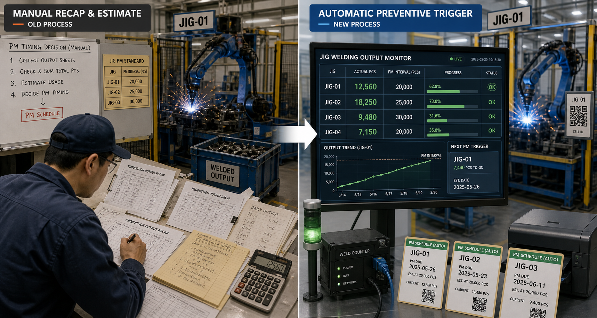
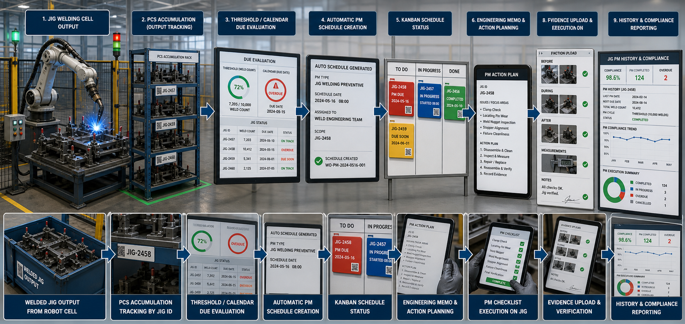

OEE Welding Extension • Preventive Automation
Automatic Preventive Jig Welding Assy
Jig welding PM and repair workflow that converts manual production recap into automatic preventive trigger, schedule control, engineering execution, and compliance reporting.
Digitalization Context

APJM is being developed as an ongoing internal MVP for robot welding maintenance. The main shift is operational: engineering no longer needs to collect production recap sheets and manually total PCS before deciding PM timing. The system reads actual robot welding output, accumulates PCS by jig, evaluates threshold and calendar due date, then drives preventive action through one connected workflow.
Business Problem
Preventive jig welding timing was vulnerable to delay because engineering first had to gather production recap data, estimate total output manually, then decide whether a jig was due. That made over-target PCS, planning readiness, checklist execution, and evidence handling harder to monitor in one operational view.
My Contribution
Designed the preventive jig welding operational flow as an OEE Welding extension: output-based PCS tracking, automatic schedule trigger, kanban status control, memo action planning, PM checklist execution, evidence upload, and compliance-oriented reporting for engineering users.
Workflow Illustration

The active workflow starts from actual robot welding output, then accumulates PCS by jig, evaluates output threshold or calendar due date, creates PM schedule automatically, moves the jig through kanban lifecycle, supports engineering memo action planning, continues through checklist-based execution and evidence capture, and closes with history plus compliance visibility.
Documented Operational Flow
- Actual welding output is sourced from production summary data and accumulated per jig since the last PM cycle.
- Preventive trigger is evaluated from output threshold and calendar interval, not from manual recap only.
- Auto schedule creation feeds kanban status such as pending, picked up, in progress, done, and attention states.
- Engineering planning continues through Memo Action, pickup PIC, PM checklist, and execution tracking.
- Evidence upload, history, analytics, and plan-vs-actual reporting complete the preventive lifecycle.
- Module permissions and scheduler jobs are aligned for engineering-focused maintenance operations.
Key Capabilities
- Dashboard visibility for normal, warning, over-target, open schedule, and compliance status by jig.
- PCS monitor and jig cards that surface live progress against PM interval targets.
- Automatic PM schedule generation with kanban lifecycle control for engineering follow-up.
- Memo Action planning, PM checklist execution, repair events, and upload evidence in one flow.
- Plan vs actual, analytics, PCS harian and threshold, audit reports, and PM history visibility.
- Hybrid legacy PHP UI hardened with Laravel-oriented scheduler, permissions, and migration support.
Tech Stack
Backend: PHP, Laravel ecosystem bridge, cron and scheduler. Frontend: legacy PHP views, JavaScript, Tailwind CSS. Database: MySQL. Domain: OEE Welding, Jig Preventive Maintenance, Engineering Workflow.
Current Status
Status: Internal MVP in active progress. The current implementation already centers preventive scheduling on actual robot welding output and calendar interval, while engineering workflow continues to be hardened across monitoring, planning, checklist execution, evidence control, and reporting.


Privacy note: screenshots and data shown are sanitized or dummy data. Internal credentials, private endpoints, and production secrets are excluded.